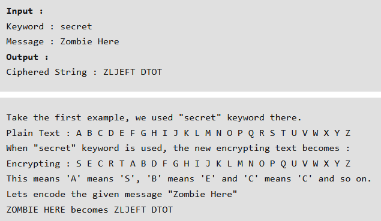

Shift Cipher -- Transcode Shift Cipher

A shift cipher, also known as a Caesar cipher, is a type of substitution cipher where each letter in the plaintext is 'shifted' a certain number of places down or up the alphabet. The shift value is a key that determines how many positions each letter is moved.
For example, with a shift of 3:
- A becomes D
- B becomes E
- ...
- Y becomes B
- Z becomes C
Because there is only a limited number of shifts possible, this encryption is quite easy to bruteforce.
Keyword Cipher -- Transcode Keyword Cipher
A keyword cipher is a type of substitution cipher that uses a keyword to create a unique alphabet for encoding and decoding messages. In this cipher, the keyword is written down and letters from the keyword are used to form the beginning of the cipher alphabet. Any remaining letters of the standard alphabet that are not in the keyword are then added in alphabetical order to complete the cipher alphabet.
For example, if the keyword is "CIPHER," the cipher alphabet would start with "C," "I," "P," "H," "E," and "R," followed by the letters "A," "B," "D," "F," "G," "J," "K," "L," "M," "N," "O," "Q," "S," "T," "U," "V," "W," "X," "Y," "Z" to form a complete alphabet.
To encode a message, you would replace each letter in the original message with the corresponding letter from the cipher alphabet. To decode, you would do the reverse.
Ofcourse, you can also place the keyword at the end of the remaining letters in the alphabet. This would then become a reverse keyword cipher. Furthermore, you can also apply a shift like the shift ciphers do, or invert either the plaintext or ciphertext alphabets. Nevertheless, placing the keyword in front of the remaining letters of the alphabet remains the most common application of the keyword cipher.